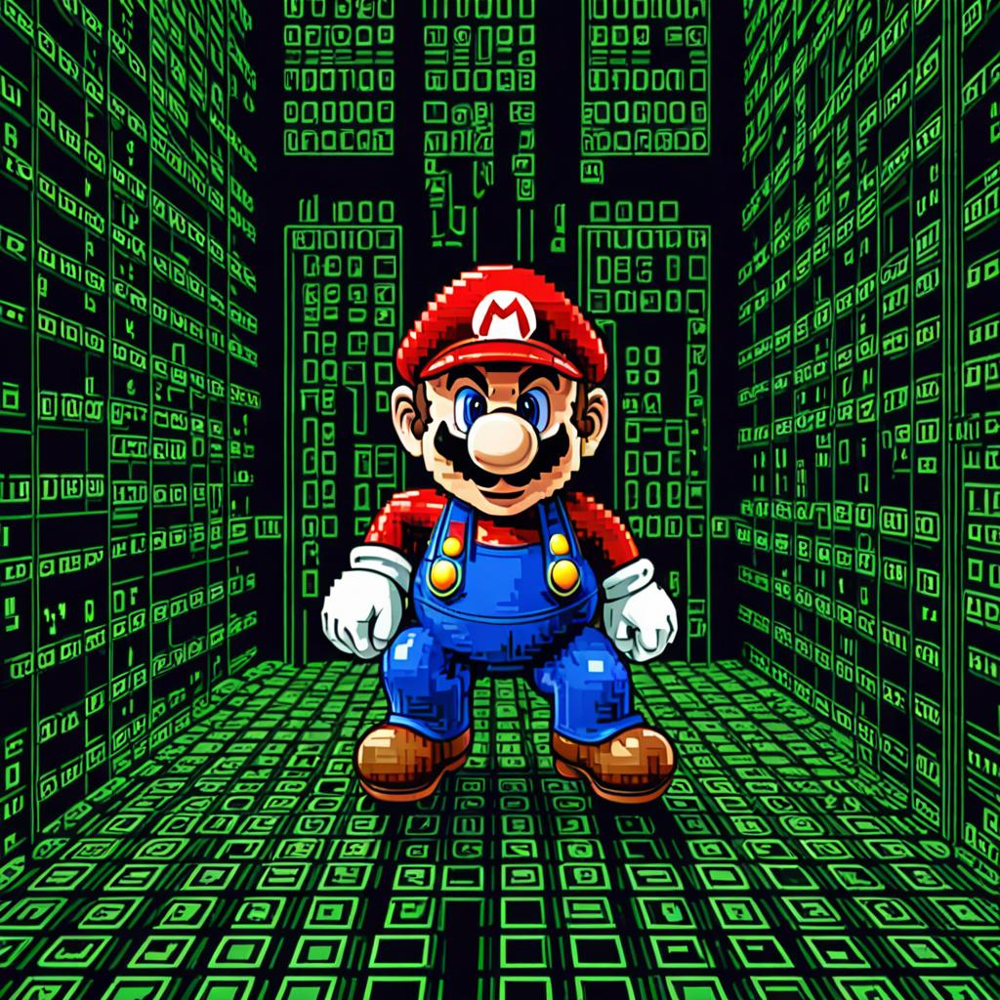

Midi to matrix representation and probabilistic super mario music with R
midi
generative
mario
matrix
rstats
Converting midi to feature vectors and back, with some probabilistic versions of the super mario overworld music.
Author
Matt Crump
Published
February 3, 2024
Show the code
from diffusers import DiffusionPipelinefrom transformers import set_seedfrom PIL import Imageimport torchimport randomimport sslimport osssl._create_default_https_context = ssl._create_unverified_context#locate library#model_id = "./stable-diffusion-v1-5"model_id ="dreamshaper-xl-turbo"pipeline = DiffusionPipeline.from_pretrained( pretrained_model_name_or_path ="../../../../bigFiles/huggingface/dreamshaper-xl-turbo/")pipeline = pipeline.to("mps")# Recommended if your computer has < 64 GB of RAMpipeline.enable_attention_slicing("max")prompt ="super mario enters the matrix. mario matrix. feature vector encoding. binary representation. pixel art."for s inrange(30):for n in [5,10]: seed = s+21 num_steps = n+1 set_seed(seed) image = pipeline(prompt,height =1024,width =1024,num_images_per_prompt =1,num_inference_steps=num_steps) image_name ="images/synth_{}_{}.jpeg" image_save = image.images[0].save(image_name.format(seed,num_steps))

super mario enters the matrix. mario matrix. feature vector encoding. binary representation. pixel art. - Dreamshaper v7
For various reasons I’d like to convert midi into a matrix format and back again. In this example, I represent each bar in the midi file in a note x time step matrix. The matrix for each bar is concatenated into a long vector, and the whole song is represented as a bar x feature vector matrix. I then calculate the column sums, and divide by the total to get probabilities for each note x time cell. These probabilities can be used to generate new bars, by randomly creating notes in time as a function of those probabilities. After making new bars, I work backwards to generate midi files from the matrix representations to listen to everything.
I used the mario overworld midi file, and this yields some probabilistic version of the overworld theme.
#import midi using miditapyrtest_midi <- pyramidi::miditapyr$MidiFrames("all_overworld.mid")#import using midomido_import <- pyramidi::mido$MidiFile("all_overworld.mid")# to R dataframedfc <- pyramidi::miditapyr$frame_midi(mido_import)ticks_per_beat <- mido_import$ticks_per_beat# unnest the dataframedf <- pyramidi::miditapyr$unnest_midi(dfc)############################################### convert to matrix# grab track 1track_1 <- df %>%filter(i_track ==0, type %in%c("note_on","note_off") ==TRUE) %>%mutate(total_time =cumsum(time)) %>%filter(type =="note_on")time_steps <-seq(0,max(track_1$total_time),8)total_bars <-round(length(time_steps)/48)+1bars <-rep(1:total_bars,each=48)bar_steps <-rep(1:48,total_bars)metric_tibble <-tibble(time_steps = time_steps,bars = bars[1:length(time_steps)],bar_steps =bar_steps[1:length(time_steps)])track_1 <- track_1 %>%mutate(time_markers =0,bars =0,bar_steps =0) for(i in1:dim(track_1)[1]){ track_1$time_markers[i] <-which(time_steps %in% track_1$total_time[i])}# get bar divisions, add them to track_1for(i in1:dim(track_1)[1]){ get_timestep <- time_steps[track_1$time_markers[i]] track_1$bars[i] <- metric_tibble %>%filter(time_steps == get_timestep) %>%pull(bars) track_1$bar_steps[i] <- metric_tibble %>%filter(time_steps == get_timestep) %>%pull(bar_steps)}# assign intervals to the barsmusic_matrix <-matrix(0,ncol = (48+128+(48*128)),nrow =max(track_1$bars))for(i in1:max(track_1$bars)){ bar_midi <- track_1%>%filter(bars == i) one_bar <-matrix(0,nrow=dim(pyramidi::midi_defs)[1],ncol=48)for(j in1:dim(one_bar)[1]){ one_bar[bar_midi$note[j],bar_midi$bar_steps[j]] <-1 } pitch_vector <-rowSums(one_bar) time_vector <-colSums(one_bar) pitch_by_time <-c(one_bar)#concatenate_vector music_vector <-c(pitch_vector,time_vector,pitch_by_time) music_matrix[i,] <- music_vector}########################################## compose midi tibbleall_midi_bars <- df[1,]all_midi_bars <- all_midi_bars[-1,]for(i in1:32){sum_music <-colSums(music_matrix)sum_music <- sum_music[(48+128+1):length(sum_music)]prob_music <- sum_music/sum(sum_music)# figure out average number of notes#mean(rowSums(music_matrix[,(48+128+1):dim(music_matrix)[2]]))# note size parameter controls note density in the bar# 24 is about the average from the songprob_bar <-rbinom(length(sum_music),size =48,prob_music)prob_bar[prob_bar >1] <-1#sum(prob_bar)#plot(prob_bar)#reconstitute matrixone_bar_matrix <-matrix(prob_bar,nrow=128,ncol=48,byrow=F)#filter for notes and timesnote_times <-which(one_bar_matrix ==1, arr.ind=T)colnames(note_times) <-c("note_num","bar_step")# convert back to midi time in ticksnote_times <-as_tibble(note_times)note_times <- note_times %>%mutate(ticks = (bar_step *8) -8,note_id =1:n(),note_on = ticks,note_off = ticks+8) %>%pivot_longer(cols =c("note_on","note_off"), names_to ="type",values_to ="cumulative_ticks") %>%arrange(cumulative_ticks) %>%mutate(time = cumulative_ticks -lag(cumulative_ticks, default =0))midi_bar <- df[1,]midi_bar <- midi_bar[-1,]midi_bar <- midi_bar %>%add_row(type = note_times$type,time = note_times$time,note = note_times$note_num) %>%mutate(i_track =0,meta =FALSE,numerator =NaN,denominator =NaN,clocks_per_click =NaN,notated_32nd_notes_per_beat =NaN,tempo =NaN,name =NA,control =NaN,value =NaN,channel =0,program =NaN,velocity =64 )all_midi_bars <-rbind(all_midi_bars,midi_bar)}# get meta messagesmeta_midi <- df %>%filter(meta ==TRUE, i_track ==0) %>%mutate(tempo =NaN) %>%add_row(i_track =0,time =0,meta =TRUE,type ="set_tempo",tempo =500000,.before =2 )# merge bar midi into full midi filemidi_track <- meta_midi %>%add_row(all_midi_bars,.after =3)########################### bouncemod_df <- midi_track# update dftest_midi$midi_frame_unnested$update_unnested_mf(mod_df)# write midi filetest_midi$write_file("mario_P48_allbar.mid")########## bounce track_name <-"mario_P48_allbar"wav_name <-paste0(track_name,".wav")midi_name <-paste0(track_name,".mid")mp3_name <-paste0(track_name,".mp3")# write the midi file to disk#miditapyr$write_midi(dfc, ticks_per_beat, midi_name)# synthesize midi file to wav with fluid synthsystem_command <- glue::glue('fluidsynth -F {wav_name} ~/Library/Audio/Sounds/Banks/nintendo_soundfont.sf2 {midi_name}')system(system_command)# convert wav to mp3av::av_audio_convert(wav_name,mp3_name)# clean up and delete wavif(file.exists(wav_name)){file.remove(wav_name)}
I used the rbinom() function to randomly generate notes based on estimates of note x time feature probabilities. It’s possible to control the amount of notes generated using the size parameter. The following examples have three levels of note density, from sparse to thick.
About 12 notes/bar:
About 24 notes/bar:
About 48 notes/bar:
to do
lots of stuff to clean up here. currently bespoke.